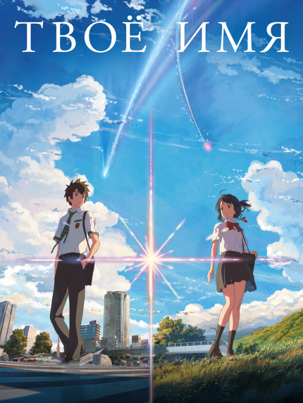
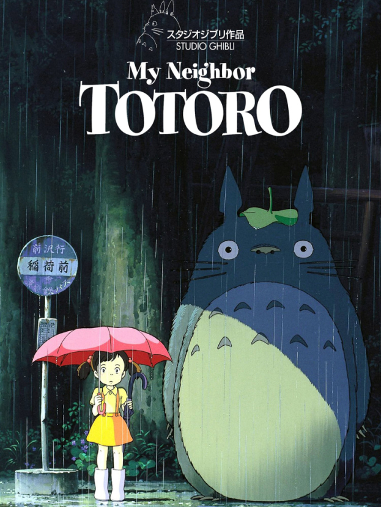
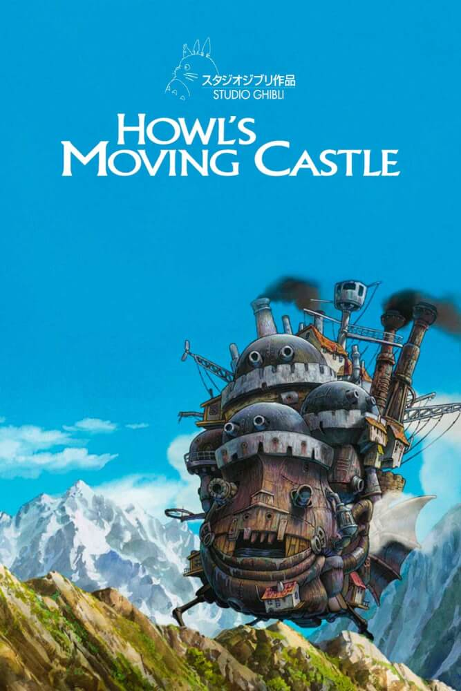

Список фильмов

Твоё имя
Токийский парень Таки и провинциальная девушка Мицуха обнаруживают, что между ними существует странная связь. Во сне они меняются телами и проживают жизни друг друга. Но однажды эта способность исчезает так же внезапно, как появилась. Таки решает во что бы то ни стало отыскать Мицуху.

Мой сосед Тоторо
Сестры Сацуки и Мэй переезжают вместе с папой в деревенский дом. Однажды девочки обнаруживают, что по соседству с ними живут лесные духи — хранители леса во главе со своим могущественным и добрым повелителем Тоторо. Постепенно Тоторо становится другом девочек, помогая им в их повседневных приключениях.

Ходячий замок
Злая ведьма заточила 18-летнюю Софи в тело старухи. Девушка-бабушка бежит из города куда глаза глядят и встречает удивительный дом на ножках, где знакомится с могущественным волшебником Хаулом и демоном Кальцифером. Кальцифер должен служить Хаулу по договору, условия которого он не может разглашать. Девушка и демон решают помочь друг другу избавиться от злых чар.